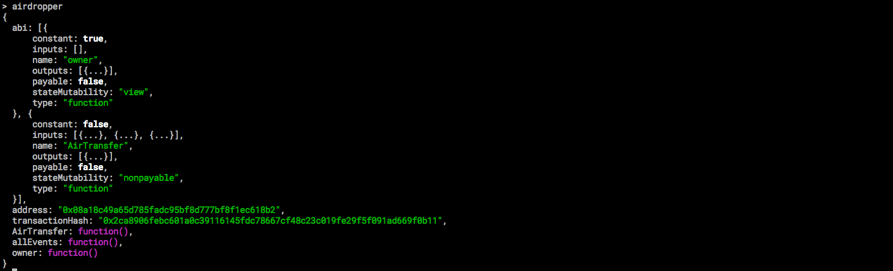

ERC20代币批量转账实现和解析(二)
批量转账的原理
我们将讲解三种空投的实现方式，前两中都是在重新部署一个空投合约，第三种则是在代币代码部署之前就写好空投代码
有不少的代币已经在以太坊上线部署，一旦上线之后是不能修改代码的，所以这些代币要想实现空投就必须重新部署一个空投合约。利用空投合约进行转账。这种方式主要用到了ERC20标准中的两个函数
approve: 此函数的调用方授权给定的地址可以从其地址中提款。
transferFrom: 该函数允许智能合约自动执行转账流程并代表所有者发送给定数量的通证。第一种方式
我们可以利用approve函数给空投合约地址给与权限，让他可以调用一个地址中的代币，然后循环调用空投合约中的transferFrom进行批量转账
先写一个简单的空投合约代码
pragma solidity ^0.4.0;
contract Airdrop {
function batch(address tokenAddr, address []toAddr, uint256 []value) returns (bool){
require(toAddr.length == value.length && toAddr.length >= 1);
bytes4 fID= bytes4(keccak256("transferFrom(address,address,uint256)"));
for(uint256 i = 0 ; i < toAddr.length; i++){
if(!tokenAddr.call(fID, msg.sender, toAddr[i], value[i])) { revert(); }
}
}
}定义了batch函数进行空投，会接受三个参数：
- 合约地址
- 接受地址列表
- 空投值的列表，和地址列表一一对应
可以看到在for循环当中利用transferFrom函数进行批量转账
按照之前部署合约的步骤进行部署，在命令行中输入airdrop
如果看到上图，就说明你部署成功啦！
接下来就利用该合约进行空投，首先需要利用approve给与空投合约一定的权限

对上面的步骤简单讲解一下，首先我们查看空投合约地址可以调用的数量为0
allowance返回空投合约地址可以调动一个地址代币的数量
对地址进行解锁，并利用approve赋予权限，在挖矿之后继续查看，发现空投合约可以调用eth.accounts[0]这个地址当中的20个代币
给予权限之后，我们就开始空投！
airdrop.batch.sendTransaction('0x6cbde372b5d3ceeee74fd56a6681eea2c3a4e94c',['0xd1d4e4a5ea685295b22d9fbe68b0cc6a8736ecf9','0xa90cf1c04ad3e96f081b599db2a7c12251ada066','0xc7e452aa3230d3699852687f7deb3c160d6ebab0','0x3e9197eb3faa278d455a35d4e9f0bc529dd5732f','0xb2dd757d40ea4b10df06e9c91e62109b82e0420b'],[1,2,3,2,1],{gas:300000})会有人发现上面的命令不是直接执行batch方法，而是调用了sendTransactoin，这是因为我在命令行下，默认的gas很低，但是这笔交易的数据很多，所以会因为gas用光而失败，不直接调用batch是为了最后的参数gas:300000把gas设置的高一点。当然你直接调用batch方法也是可以的，但是不要最后的{gas:300000}

从上面可以看到批量转账完成
第二种方式
第一种方式需要我们利用approve给合约地址给予一定的权限，但是如果我们把合约地址当成一个账户地址，给他转一些代币，那么空投合约就可以用自己地址当中的币进行转账了。
先写一个可以实现这种方式的合约代码
pragma solidity ^0.4.18;
contract Ownable {
address public owner;
function Ownable() public {
owner = msg.sender;
}
modifier onlyOwner() {
require(msg.sender == owner);
_;
}
}
interface Token {
function balanceOf(address _owner) public constant returns (uint256 );
function transfer(address _to, uint256 _value) public ;
event Transfer(address indexed _from, address indexed _to, uint256 _value);
}
contract Airdropper is Ownable {
function AirTransfer(address[] _recipients, uint[] _values, address _tokenAddress) onlyOwner public returns (bool) {
require(_recipients.length > 0);
Token token = Token(_tokenAddress);
for(uint j = 0; j < _recipients.length; j++){
token.transfer(_recipients[j], _values[j]);
}
return true;
}
}从代码中可以看到我们是利用合约地址当中的代币进行交易的，按照之前部署代币的步骤我们进行部署

部署成功之后，向空投合约转一些代币，然后调用空投合约的方法进行空投，实施的步骤和第一种方式大同小异，就不在赘述了，具体看下图

第三种方式
前面两种方式都是在合约外部在重新部署一个合约用于空投，第三种方式则是在合约中就实现空投，实现的思路其实和之前的方法一样，只不过是集合到了合约当中
将下面的代码加到合约当中
function batch(address []toAddr, uint256 []value) returns (bool){
require(toAddr.length == value.length && toAddr.length >= 1);
for(uint256 i = 0 ; i < toAddr.length; i++){
transfer(toAddr[i], value[i]);
}
}按照之前的步骤部署到geth私有链中，查看合约
可以发现，现在的合约当中已经有了batch方法了，然后进行交易就可以了

空投合约的三种方式就实现了，其实原理都很简单


%E6%8E%88%E6%9D%83%E7%B1%BB%E5%9E%8B%2Fthumbnail.png)

%E5%AE%9E%E7%8E%B0%E7%AE%80%E5%8D%95%E7%9A%84OAuth2.0%E6%B5%81%E7%A8%8B%2Fthumbnail.png)
%E6%A6%82%E8%BF%B0%2Fthumbnail.png)